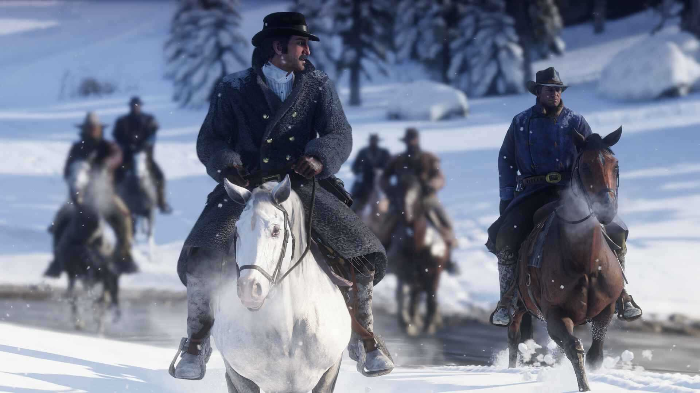
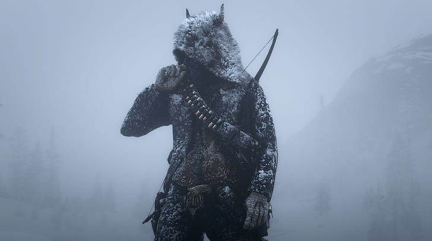

Történet és Főszereplő
A történet középpontjában Arthur Morgan, a Van der Linde banda tagja áll, aki próbál túlélni a törvényekkel és a környezet változásaival szemben. A játék folyamán a játékos Arthur szemszögéből élheti át a bandához tartozó kalandokat, miközben különböző küldetéseken vesz részt, segít a bandatagoknak, és a vadnyugaton való túlélésért küzd.
Nyílt Világ és Felfedezés
A Red Dead Redemption 2 világát lenyűgöző részletességgel hozta létre a Rockstar Games, hatalmas, interaktív környezettel, ahol a játékosok szabadon felfedezhetik a vadonatúj tájakat. Vadászhatnak, halászhatnak, és különböző karakterekkel találkozhatnak. Az elképesztő grafika, az élethű animációk és a dinamikus tájak mind hozzájárulnak a játék egyedülálló élményéhez. 
Játékmechanika és Túlélési Elemei
A játékban a vadászat, állatokkal való interakció és az életben maradás kulcsfontosságú elemek. A játékosoknak nemcsak a küldetéseket kell teljesíteniük, hanem a vadnyugaton való túléléshez szükséges napi teendőket is el kell végezniük, például élelmet keresni, szállást építeni és a bandatagokkal való kapcsolatokat ápolni.
Erkölcsi Dilemmák és Döntések
A történet során a játékosok döntései és cselekedetei befolyásolják a karakterek sorsát, valamint a világ reakcióját. A morális döntések komoly hatással vannak a történet alakulására és a karakterek közötti kapcsolatokat is formálják, ami különleges és személyre szabott élményt nyújt.
